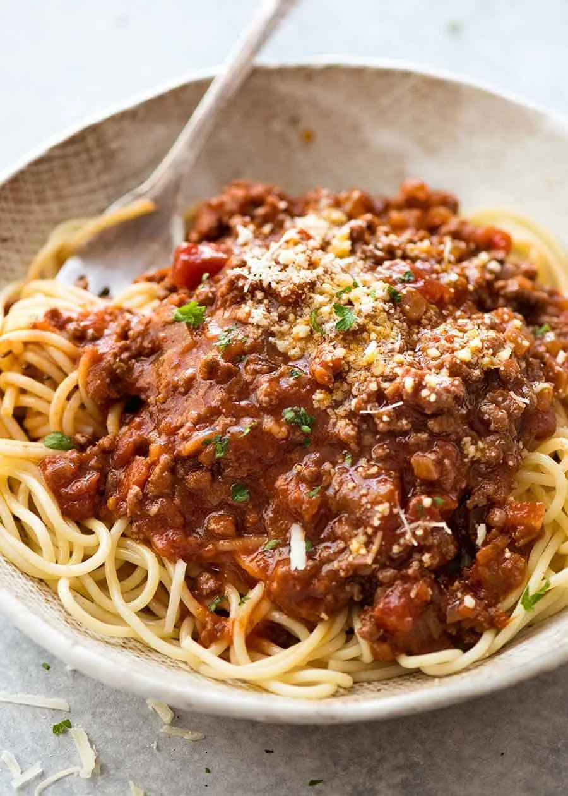

pasta bolognase

Description
Everyone needs a great everyday Spaghetti Bolognese recipe, and this is
mine! The Bolognese Sauce is rich, thick and has beautiful depth of
flavour. It’s perfect for a quick midweek meal but even better if you can
simmer it for a couple of hours! Serve it over pasta, stuff into jacket
potatoes, make an epic Lasagna or Baked Spaghetti Pie!
prep time
less than 30 mins
cook time
30 mins to 1 hour
ingredients
- 1 tbsp olive oil
- 4 rashers smoked streaky bacon, finely chopped
- 2 medium onions, finely chopped
- 2 carrots, trimmed and finely chopped
- 2 celery sticks, finely chopped
- 2 garlic cloves finely chopped
- 2-3 sprigs rosemary leaves picked and finely chopped
- 500g beef mince
- bolognese sauce
steps
- STEP 1
Put a large saucepan on a medium heat and add 1 tbsp olive oil.
- STEP 2
Add 4 finely chopped bacon rashers and fry for 10 mins until golden and crisp.
- STEP 3
Reduce the heat and add the 2 onions, 2 carrots, 2 celery sticks, 2 garlic cloves and the leaves from 2-3 sprigs rosemary, all finely chopped, then fry for 10 mins. Stir the veg often until it softens.
-
Increase the heat to medium-high, add 500g beef mince and cook stirring for 3-4 mins until the meat is browned all over.